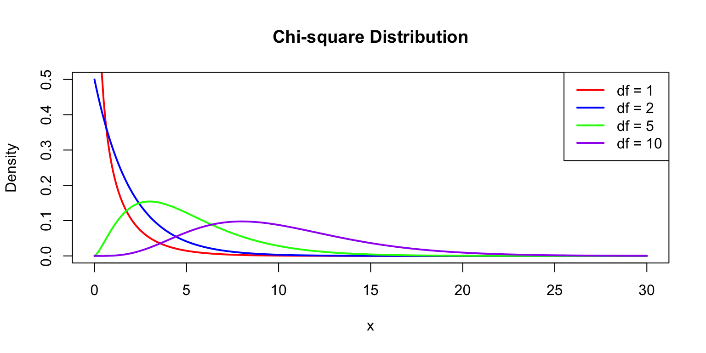
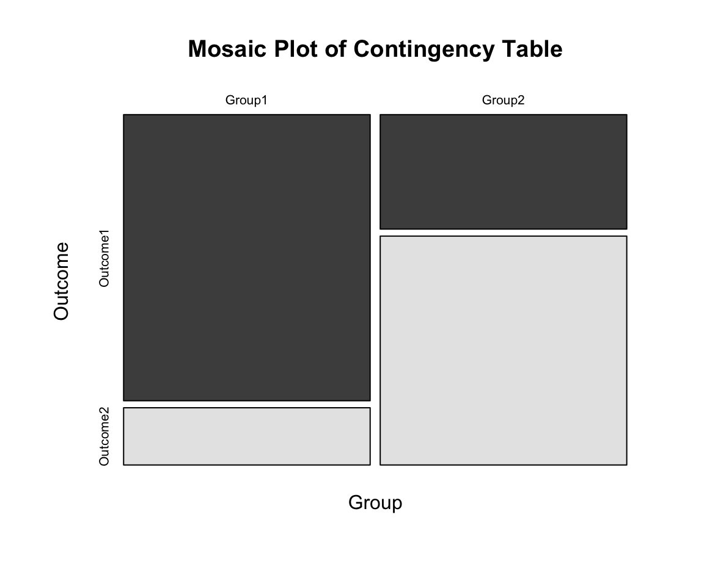
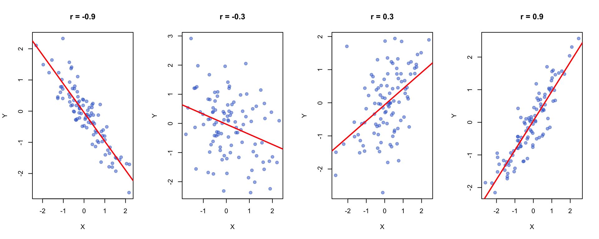
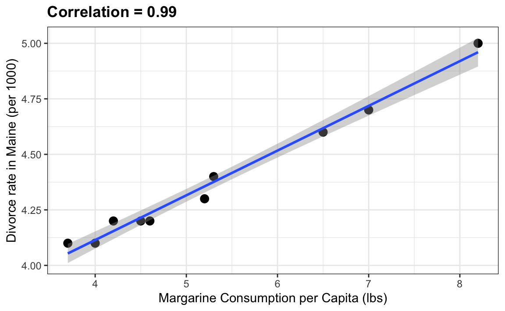
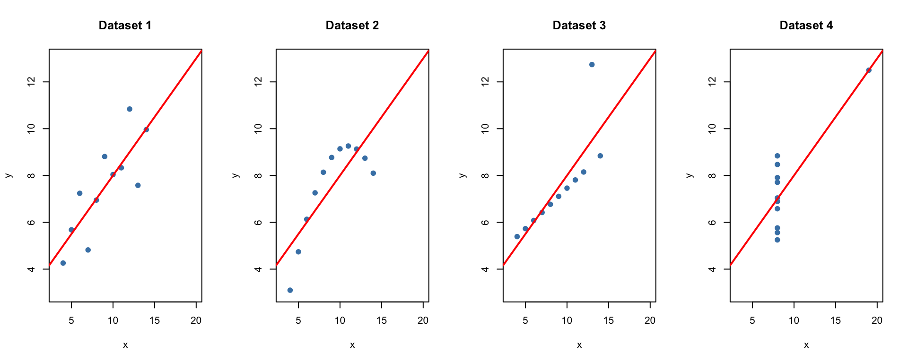
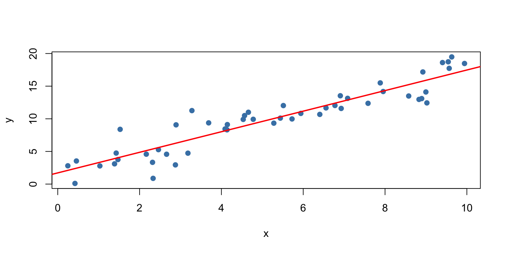

# Install new packages (run once)
install.packages(c("epitools", "DescTools", "pwr"))
# Load packages
library(tidyverse) # Data manipulation & visualization
library(epitools) # Epidemiological tools (odds ratios, risk ratios)
library(DescTools) # Descriptive statistics & tests (G-test, Cramer's V)
library(pwr) # Power analysis for study designStatistics for Bioengineering - Week 4
Week 4: Frequency and Contingency Analyses, Correlation and Covariance
Week 4 Topics
- Frequency analyses
- Contingency tests
- Non-parametric tests
- Correlation and Covariance
- Next week - linear models!
Note
Readings: Chapters 18-19 HW2 Assigned on Wednesday, due next week
Packages for This Week
Tip
epitools is essential for 2×2 contingency table analyses in epidemiology and clinical research.
Chi-Square Tests
The Chi-Square Distribution
If \(Z_1, Z_2, ..., Z_k\) are independent standard normal variables:
\[\chi^2_k = \sum_{i=1}^k Z_i^2\]
Properties:
- Domain: \(x \in [0, \infty)\)
- Mean: \(k\)
- Variance: \(2k\)
- Right-skewed
Chi-Square Distribution

Chi-Square Distribution Code
df_vals <- c(1, 2, 5, 10)
x <- seq(0, 30, length.out = 300)
colors <- c("red", "blue", "green", "purple")
plot(x, dchisq(x, df = 1), type = "l", lwd = 2, col = colors[1],
ylim = c(0, 0.5), ylab = "Density", main = "Chi-square Distribution")
for(i in 2:4) {
lines(x, dchisq(x, df = df_vals[i]), lwd = 2, col = colors[i])
}
legend("topright", paste("df =", df_vals), col = colors, lwd = 2)Chi-Square Test Statistic
\[\chi^2 = \sum \frac{(O_i - E_i)^2}{E_i}\]
Where:
- \(O_i\) = Observed frequency
- \(E_i\) = Expected frequency
Degrees of freedom: \(df = k - 1\) (goodness-of-fit)
When to Use Chi-Square Tests
- Goodness-of-fit test: Does observed data match expected proportions?
- Test of independence: Are two categorical variables related?
- Test of homogeneity: Do different groups have the same distribution?
Assumptions
- Data are counts (not percentages or proportions)
- Categories are mutually exclusive
- Expected count in each category should be ≥ 5
Goodness-of-Fit Test
Tests whether observed frequencies match expected proportions.
# Mendelian 3:1 ratio
observed <- c(Dominant = 72, Recessive = 28)
expected_probs <- c(0.75, 0.25)
chisq.test(x = observed, p = expected_probs)
Chi-squared test for given probabilities
data: observed
X-squared = 0.48, df = 1, p-value = 0.4884Goodness-of-Fit: Dice Example
# Rolling a six-sided die 60 times
observed <- c(8, 9, 10, 12, 11, 10)
expected_probs <- rep(1/6, 6)
chisq.test(x = observed, p = expected_probs)
Chi-squared test for given probabilities
data: observed
X-squared = 1, df = 5, p-value = 0.9626Test of Independence
Tests whether two categorical variables are related.
# Create contingency table
tbl <- matrix(c(50, 10, 20, 40), nrow = 2, byrow = TRUE)
rownames(tbl) <- c("Group1", "Group2")
colnames(tbl) <- c("Outcome1", "Outcome2")
chisq.test(tbl)
Pearson's Chi-squared test with Yates' continuity correction
data: tbl
X-squared = 28.834, df = 1, p-value = 7.884e-08Mosaic Plot

Mosaic Plot Code
mosaicplot(tbl,
main = "Mosaic Plot of Contingency Table",
xlab = "Group",
ylab = "Outcome",
color = TRUE)Cramér’s V
Effect size for chi-square test:
\[V = \sqrt{\frac{\chi^2}{n(k-1)}}\]
| V | Interpretation |
|---|---|
| 0.1 | Small effect |
| 0.3 | Medium effect |
| 0.5 | Large effect |
Calculating Cramér’s V in R
# Chi-square test of independence
test <- chisq.test(tbl)
# Extract test statistic
chisq_val <- test$statistic
# Total number of observations
n <- sum(tbl)
# Minimum of (rows, columns) for Cramér's V formula
k <- min(nrow(tbl), ncol(tbl))
# Cramér's V calculation
cramers_v <- sqrt(chisq_val / (n * (k - 1)))
cat("Cramér's V:", round(cramers_v, 3))Cramér's V: 0.49Fisher’s Exact Test
Use when:
- Sample sizes are small
- Expected frequencies < 5
beverage_table <- matrix(c(8, 2, 1, 9), nrow = 2, byrow = TRUE)
rownames(beverage_table) <- c("American", "English")
colnames(beverage_table) <- c("Coffee", "Tea")
fisher.test(beverage_table)
Fisher's Exact Test for Count Data
data: beverage_table
p-value = 0.005477
alternative hypothesis: true odds ratio is not equal to 1
95 percent confidence interval:
2.057999 1740.081669
sample estimates:
odds ratio
27.32632 Odds Ratios
Compares odds of an event between two groups:
- OR = 1: No association
- OR > 1: Group 1 has higher odds
- OR < 1: Group 1 has lower odds
Example:
Odds (Americans prefer Coffee) = \(\frac{8}{2} = 4\)
Odds (English prefer Coffee) = \(\frac{1}{9} ≈ 0.111\)
Odds Ratio = \(\frac{4}{0.111} ≈ 36\)
Note
The chi-square test tells us whether there is a difference, but the odds ratio tells us the effect size - how much more likely one outcome is compared to another.
Calculating Odds Ratio in R
# Fisher's test returns odds ratio automatically
fisher_result <- fisher.test(beverage_table)
fisher_result$estimate # Odds ratio
# 95% confidence interval for odds ratio
fisher_result$conf.int
# For larger tables, can use epitools package
# install.packages("epitools")
library(epitools)
oddsratio(beverage_table)G-Test (Log-Likelihood Ratio Test)
An alternative to chi-square based on log-likelihood ratios:
- Better when sample sizes are small
- Better when differences between observed & expected are small
- Follows chi-square distribution
library(DescTools)
# G-test for goodness of fit
observed <- c(161, 38, 53, 6)
expected_ratio <- c(9/16, 3/16, 3/16, 1/16)
GTest(observed, p = expected_ratio)
# G-test for independence
GTest(contingency_table)R Exercise: Chi-Square and Contingency Analysis
Exercise
A researcher studies the relationship between antibiotic treatment and bacterial clearance:
| Cleared | Not Cleared | |
|---|---|---|
| Treatment A | 45 | 15 |
| Treatment B | 30 | 30 |
| Control | 20 | 40 |
- Create the contingency table in R
- Perform chi-square test of independence
- Calculate Cramér’s V effect size
- Interpret: Is treatment associated with clearance?
# Starter code
bacteria <- matrix(c(45, 15, 30, 30, 20, 40),
nrow = 3, byrow = TRUE,
dimnames = list(
Treatment = c("A", "B", "Control"),
Outcome = c("Cleared", "Not Cleared")))
# Your analysis here...Relationship between two continuous variables
Covariance and Correlation
- Simple but useful measures of association between two or more continuous variables
- Covariance is the shared variance and scales with the variance of the variables
- Correlcation is a standardized covariance to put the values on a common scale
- Both are useful but suboptimal compared to linear models.
Covariance and Correlation
Covariance Measures how two variables vary together:
\[Cov(X,Y) = \frac{\sum(x_i - \bar{x})(y_i - \bar{y})}{n-1}\]
Correlation does the same thing but is a standardized covariance (ranges from -1 to 1):
\[r = \frac{Cov(X,Y)}{s_x \cdot s_y}\]
- Positive: variables increase together
- Negative: one increases as other decreases
- Zero: no linear relationship
Covariance and Correlation

Visualizing Different Correlations in R

Visualizing Different Correlations in R
par(mfrow = c(1, 4))
set.seed(123)
n <- 100
# Function to generate correlated data
make_corr_data <- function(r, n = 100) {
x <- rnorm(n)
y <- r * x + sqrt(1 - r^2) * rnorm(n)
data.frame(x = x, y = y)
}
correlations <- c(-0.9, -0.3, 0.3, 0.9)
for(r in correlations) {
d <- make_corr_data(r)
plot(d$x, d$y, pch = 19, col = rgb(0.2, 0.4, 0.8, 0.5),
main = paste("r =", r), xlab = "X", ylab = "Y")
abline(lm(y ~ x, d), col = "red", lwd = 2)
}Calculating Correlations in R
Pearson Correlation Value
# Using built-in mtcars dataset
cor(mtcars$mpg, mtcars$wt) # Pearson correlation[1] -0.8676594
Pearson Product-Moment Test of Correlation
# Test significance
cor.test(mtcars$mpg, mtcars$wt)
Pearson's product-moment correlation
data: mtcars$mpg and mtcars$wt
t = -9.559, df = 30, p-value = 1.294e-10
alternative hypothesis: true correlation is not equal to 0
95 percent confidence interval:
-0.9338264 -0.7440872
sample estimates:
cor
-0.8676594 Parametric vs. Nonparametric Correlation
| Test | Use When | R Function |
|---|---|---|
| Pearson | Linear relationship, normal data | cor.test(method="pearson") |
| Spearman | Monotonic relationship, n < 30 | cor.test(method="spearman") |
| Kendall | Monotonic relationship, n ≥ 30 | cor.test(method="kendall") |
Challenges of only using correlation
Correlation vs. Causation
Warning: Correlation does NOT imply causation without randomization!

Anscombe’s Quartet

All four datasets have identical: mean of x (9), variance of x (11), mean of y (7.5), correlation (0.816), and regression line (\(y = 3.00 + 0.50x\)).
In-Class Demo: Anscombe’s Quartet in R

Anscombe’s Quartet Code
# Built-in anscombe dataset
data(anscombe)
# All four have identical summary statistics!
cat("Dataset 1 - cor:", round(cor(anscombe$x1, anscombe$y1), 3),
"| Dataset 2 - cor:", round(cor(anscombe$x2, anscombe$y2), 3),
"\nDataset 3 - cor:", round(cor(anscombe$x3, anscombe$y3), 3),
"| Dataset 4 - cor:", round(cor(anscombe$x4, anscombe$y4), 3))
par(mfrow = c(1, 4))
for(i in 1:4) {
x <- anscombe[, i]; y <- anscombe[, i + 4]
plot(x, y, pch = 19, col = "steelblue", main = paste("Dataset", i),
xlim = c(3, 20), ylim = c(3, 13))
abline(lm(y ~ x), col = "red", lwd = 2)
}
Warning
Always visualize your data! Summary statistics can hide important patterns.
Simple Linear Regression
What is a Linear Model?
\[y_i = \beta_0 + \beta_1 x_i + \epsilon_i\]
- \(\beta_0\): intercept
- \(\beta_1\): slope
- \(\epsilon_i\): error/residual
What is a Linear Model?
\[y_i = \beta_0 + \beta_1 x_i + \epsilon_i\]
- \(\beta_0\): intercept
- \(\beta_1\): slope
- \(\epsilon_i\): error/residual


Many Methods Are Linear Models
- Simple linear regression
- Multiple regression
- ANOVA (single and multi-factor)
- ANCOVA
- Repeated-measures ANOVA
Classes of Linear Models
| Abbreviation | Name | Description |
|---|---|---|
| GLM | General Linear Model | Continuous variables |
| GLMM | General Linear Mixed Model | Mixed continuous/categorical |
| Generalized LM | Generalized Linear Model | Non-normal response |
| GAM | Generalized Additive Model | Non-linear relationships |
Linear Models in R
# Include intercept (default)
Y ~ X
Y ~ 1 + X
# Exclude intercept
Y ~ -1 + X
Y ~ X - 1
# Fit and examine model
my_lm <- lm(Y ~ X, data = mydata)
summary(my_lm)Linear Regression Example

Linear Regression Example Code
set.seed(123)
x <- runif(50, 0, 10)
y <- 2 + 1.5*x + rnorm(50, 0, 2)
my_lm <- lm(y ~ x)
plot(x, y, pch = 19, col = "steelblue")
abline(my_lm, col = "red", lwd = 2)